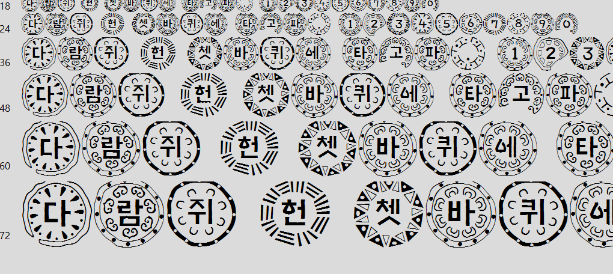

-
-
-
-
-

This page is timeline about the history of Korean, typogrpahy and ornament. The timeline may not represent every single incidents, but my own selection of moments from time periods that I found important and interesting. This timeline also includes my own re-interpretation on each theme.The timeline starts from 1400s, when Korean alphabet was 'created.'
Hunminjeongeum is the formal name for the present-day Korean alphabet, hangul. Hunminjeongeum manuscript is a book that described the principle, purpose and the way to use hangul. It was created by King Sejong from the Joseon dynasty, mostly by himself. The inspiration of this alphabet is not clear, however, there are several inspirations theories based on Seal Script, Sanskrit, Phags-pa script, Ga-rim-to script, Kamiyomoj, and Hebrew.
Hangul is an alphabet that was created artificially. One of the most notable things is that the shape of it is quite geometric. It is estimated that printing was considered more than writing while creating the Hangul alphabet. Later, hangul was spread to the public and various types of writing system appeared that was more appropriate for brush handwriting.
At first, hangul followed vertical writing, like the Chinese writing system. However, after the colonization and influence of Latin languages, the modern Korean writing system embraced horizontal writings, word space, glyphs, Arabic numerals and so on.
This is one of my Korean font design that is more suitable for vertical writing. Each letter fit to square and has a geometric shape, to make it look more suitable for type rather than handwriting. It was quite interesting for me that it was created to be suitable for printing rather than writing, which made me think about how it’s quite similar to modern digital design.
Fleuron is a typographic flower-shaped element used as a tool for ornamentation and dividing contents.
During the Fourth Crusade, Eastern culture spread to Europe. Crusade headed to Constantinople instead of Jerusalem due to the funding problem, and they looted cultural assets and artworks. After numerous artifacts and assets were brought to Venice, and books from East containing Persian style spread to Europe via Italy. The early Arabesque pattern influenced the ornaments of European prints, resulting in more of a repetitive and systematic pattern.
Fleuron is originated from metal types developed from Ratdolt’s miniature woodcuts. The oldest example of fleuron is one of Giovanni and Alberto Alvise brothers. Their Are Moriendi were bestsellers throughout the 15th century and used two types of fleurons. The commercial success of Are Moriendi opened up the new era for typographic ornaments, which still remains on the digital type.
My work indicates a Korean font design that reflects the historical Latin language and glyph. From 20 century lots of Korean manufacturers and designers made an attempt to somewhat imitation of Latin language at first and it continued to this day. Re-interpretation of the Latin-based alphabet is still valid considering the rise of the need for interpretation of not only words but also the typography design itself. They’re mostly seen on titles of books, movies, posters, logos, brands and so on.
Munjado is one of the many forms of Minwha — A Korean art form that is mostly used by more of the general public and lower class. Munjado consists of a Chinese character and surrounding decorative illustration relevant to the character. This type of art was transferred from China and developed in Korea. Usually, Munjado has the purpose of delivering the message of Confucianism or wishing for the luck based on relief faith that is based on individuals’ own blessing, usually financial and wealth.
The most common form of munjado is Hyojaemunjado - a munjado that focuses on the values of Confucianist ideology. Hyojaemunjado were usually made into a folding screen containing 8 Chinese characters (孝悌忠信禮義廉恥) that are core values of Confucianism. The form of Hyojaemunjado changed throughout time and it can be organized in three different periods. First, it started out by putting illustrations inside the type. Second, the illustration replaced certain shapes of type and emerged as a painting form. Later, the abstraction started to appear on the later Hyojaemunjado.
Munjado is an interesting art form that shows a mix of typography and illustration. Ornaments complement the shape and meaning of typography, which could be interesting re-interpretation in modern times. However, munjado has been traditionally Chinese character, which I wanted to make a change.
Psychedelic art is an art movement which can be seen as music, graphic design, and visual art. This movement took off in San Francisco in the 1960s. Its origin also has a relation to hippy culture and psychedelic music. Psychedelic rock bands like Jefferson Airplane and Grateful Dead made promotional poster designs using fluid-like texts and vibrant colors, which are noticeable features of psychedelic art.
In Psychedelic designs, fonts are fluid and almost illegible. However, their design didn't come out of nowhere. The psychedelic design was originated from Art Nouveau, Vienna secession, surrealism and Op art, and Pop art. Especially, the psychedelic design was heavily influenced by Art Nouveau including fluid curves, elements and also fonts. This influence apparent especially from Secession Poster designed in 1902 by Alfred Roller, who was one of the members of the Vienna Secession movement.
Psychedelic is one of the good modern examples of blurring the line between the notion of the form and ornament. Especially, illegible fonts exist between forms. My work explores those concepts in Korean type.
When Jeon Du-Whan took control of Korean government after Bak Jeong-Hee, protestors around the nation rose against the dictatorship. The government made attempts to suppress those and also sought for ways to make people less interested in politics. One of those method was making people get interested in entertainment, which resulted in big support on entertainment industry.
When the 88 Olympic was determined to be held in Seoul, Korean government saw it as a tool for promoting Korea under capitalist dictator regime. Hence, they seek for designing “Korean Identity” to show foreigners. During the preparation, Korea built facilities related to olympics and some of those spaces were named Olympic. One of the example is Olympic road, which was built to compensate the need for road on the southern Seoul and to prepare for incoming foreigners during Asian Olympics and 88 Olympics.
It was 88 olympic that the sense of nation’s Brand Identity was explored in such large text. 88 Olympic brought the need for building “Korean Identity.” It was the time the use of 5-color (Obangsaek, 오방색) was encouraged and was used for color system of 88 Olympic. Obangsaek is a representative colors of universe in relation to Yin-Yang theory. On previous government, this use of color was restricted for the reason of avoiding Korean “cult.”
88 Olympic is cultural icon of 80s Seoul. South Korea was recovering from the damage of Korean War and it was considered to be the result of economic growth. It was promoting the Korean Identity and selective elements of tradition was used in order to achieve it. The use of selected tradition and the idea of tradition changed depending on the people on power.
New design for Korean type has constantly emerged as new technology for typesetting and printing developed and it was the same for computer technology. In 1985 2-set became standard for Korean typing, which is used until today for computers. It was around the time when digitizing Korean type has started and a famous type designer, Ahn Sang Soo published his work. It was around the time for the emerge of personal desktop. Some of the iconic Korean digital type includes Gulim, Dotum, Gungseo, Batang, etc.

I also got inspiration from Yang-Jae Wa-Dang Che, which is the icon of “Bad” font. The type design itself is quite iconic and distinguishable, since overly complex pattern is surrounding the type and is quite hard to use it for any purposes. The font became infamous and is more considered to be a meme, becoming the icon of “bad” design.
Recently I found out the website called “문화포털(directly translated into: Culture Portal),” where they organized and distributed Korean pattern in digital version. It made it easy for people to use the pattern since it was distributed online. However, for me it reminded me the book, “The Grammar of Ornament” written by Owen Jones. Although 문화포털 is dedicated to distributing Korean Ornament to Korean users, there is still possibility of misuse of tradition.